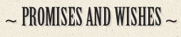

Make your own promise, wish or prediction for 2045
(these will be added to the predictions on The Prediction Machine work)
Enter the Year of Your Birth
Enter your unique code
You need to get a prediction and unique web code from The Prediction Machine before you can make a promise or wish of your own